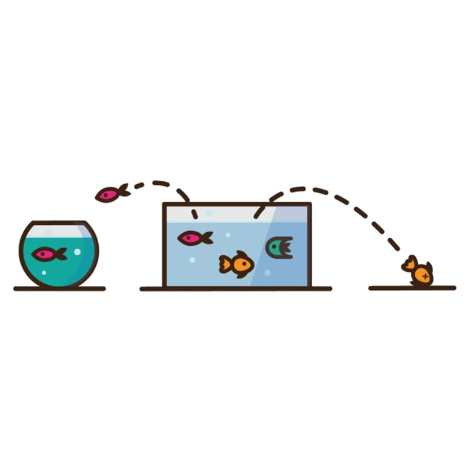
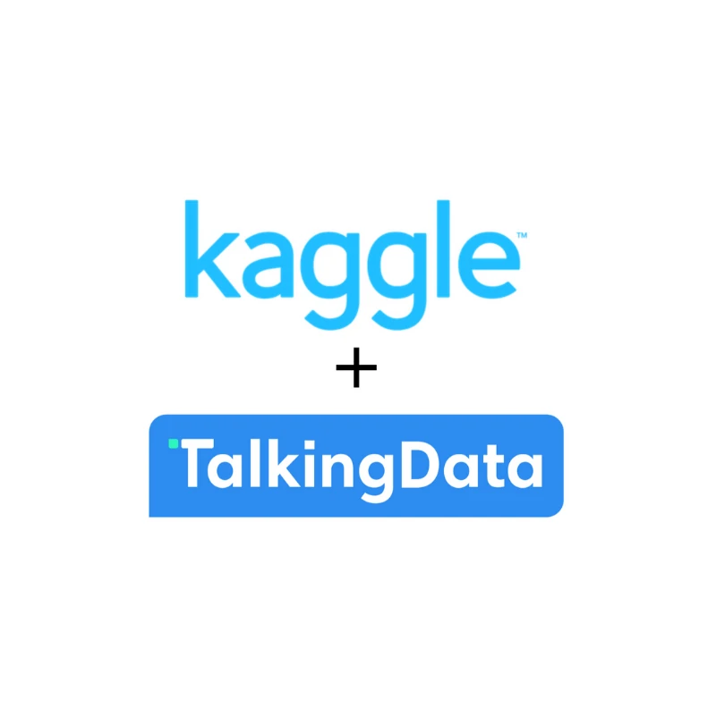

Data Science Academy
Data Analyst Certified Professional (DACP)
Issued Jan 2023
Hi, welcome!
Staff Data Engineer Data Architecture & Big Data Governance, FinOps & AI
From warehouse to lakehouse, from classic ML to generative AI: I design the data architecture a whole company runs on.
About me Download CVAbout
In practice, I'm an architect. Before anyone writes a line of code, I think through and decide how the data should be structured, in a warehouse or a lakehouse, in batch or in streaming. Today I technically lead a team of 15+ people (data engineers, analysts and data scientists) spread across Brazil and Romania.
I joined Flutter Brazil to build the foundation. I created the dimensional model and the data lake from scratch, with Python, dbt and a lot of SQL. Then I led the migration of the whole data infrastructure to Databricks: around 50 sources, from Google Analytics 4 to internal systems and third-party tools, with pipelines going from hours to minutes.
As Tech Lead the job got wider. I defined the architectures and ways of working for almost the whole data team, restructured Unity Catalog by domain and led the FinOps work that cut platform cost by more than 50%. As Staff, that scope keeps growing.
I come from the more classic side of machine learning, since college. I once did backpropagation by hand, on paper, before any framework did it for me. I followed the shift to generative AI closely from the moment it appeared, and today I move between both worlds comfortably. I helped build the company's LTV and payback models, and I use generative AI to speed up the day-to-day tools we build.
Before Flutter Brazil, I was a Data Architect at Clicksign. I built the data structure from scratch there, on Redshift, dbt and Airflow, and helped the group grow from 4 to about 20 people. I also spent a few years as a professor of Big Data and Data Engineering, with hundreds of students. Maybe that's why I like explaining things in a way that makes sense to people who don't live in SQL all day.
Still hands-on every day, in architecture, modeling and platform decisions. When the team needs it, I step in to set priorities and unblock business decisions.
The tools and practices I work with, grouped by what they are for.
Impact
Numbers from my time at Flutter Brazil and Clicksign.
Experience
Since 2020 I've gone from data scientist to Staff Data Engineer, building platforms, teams and ways of working along the way.
Career at a glance: pick a role to see the detail.
Jul 2026 – Present
A Databricks data platform used by thousands of people across the whole company, with a team of 15+ people (engineering, analytics and data science) across Brazil and Romania.
Technologies: Databricks, Unity Catalog, Delta Lake, Apache Spark, PySpark, Databricks Workflows, dbt, SQL, Python, AWS, Terraform, Docker, Kubernetes, GitHub Actions
Jul 2025 – Jun 2026
Led a team of 10 people (engineering, analytics and data science) across Brazil and Romania, with direct and technical leadership, on a Databricks platform of tens of TB.
Achievements
Activities
Technologies: Databricks, Unity Catalog, Delta Lake, Apache Spark, PySpark, Databricks Workflows, dbt, SQL, Python, AWS, Terraform, GitHub Actions, Streamlit, Metabase
Aug 2024 – Jul 2025
Achievements
Activities
Technologies: Python, dbt, SQL, Databricks, Google Analytics 4
Achievements
Activities
Technologies: Amazon Redshift, dbt, Apache Airflow, dimensional modeling
Achievements
Technologies: Apache Airflow, dbt, Amazon Redshift, dimensional modeling, data governance
Technologies: Python, PostgreSQL, Apache Airflow, REST APIs, predictive modeling
Topics: Big Data, Data Engineering, data modeling, data warehouses, lakehouses, cloud
Programs, certifications and courses, most recent first. Each entry links to the original certificate.
Data Science Academy
Issued Jan 2023
Data Science Academy
Completed Jan 2023
Data Science Academy
Completed Dec 2022
Astronomer
Issued Dec 2022
Astronomer
Issued Nov 2022
Data Science Academy
Issued Apr 2022
Data Science Academy
Completed Oct 2021
Data Science Academy
Completed Jun 2020
Airflow is a platform to programmatically author, schedule and monitor workflows. I asked whether it could also be used to process data: what the benefits would be, how to build consistent, simple pipelines for low data volumes, and which pipeline architectures are possible.
I talked about my career path, mindset, joys and frustrations, how I landed my first job as a data scientist and what the day-to-day looked like.
Aug 2018 – Aug 2019
I worked on understanding and refining recognition and detection techniques for objects like lines, human faces and cells. As a branch of that research, I developed an edge-detection optimization analysis for cells, aimed at making it easier to build 3D models in biology, pharmacology and medicine.
Work
Case studies from the platforms and teams I've led, followed by earlier machine learning projects.
Starting point~50 sources, from Google Analytics 4 to internal systems and third-party tools, on a platform of tens of TB. Thousands of tables and thousands of jobs a day.
What I didMoved the whole data infrastructure to Databricks and built the company's dimensional model and data lake from scratch, with Python, dbt and a lot of SQL.
What changedPipelines went from hours to minutes, and the dimensional model and data lake are still what every area works with today.
Starting pointAn annual data platform bill in the six figures (USD).
What I didArchitected the FinOps effort across clusters, jobs, storage and governance policies, with cost forecasting models so that spend could come down in a predictable way.
What changedMore than 50% off the data platform's cost.
What I didArchitected nearly every data structure the company had in that period, with 100+ Airflow pipelines for modeling and ingestion, and led the implementation of dbt on Redshift.
What changedQuality control, governance, easier modeling, observability and simpler orchestration.
What I didRestructured Unity Catalog by domain and looked after data modeling and quality, so provisioning stays reliable and secure.
What changed10+ domains, with architectures and ways of working defined for almost the whole data team.
What I didBuilt apps for platform observability and for business metrics monitoring, all near-real-time, along with decision-support dashboards.
What changedInstant visibility into issues, with a latency of a few minutes.
What I didRolled out CI/CD with trunk-based development and helped steer how the company's analytical modeling evolves with dbt.
What changedIncidents and rework dropped by ~3x.
What I didArchitected the data protection processes (in compliance with LGPD and aligned with GDPR) and the continuity of data delivery, and built 10+ APIs to send data to partners and third parties.
Starting pointQuestions the models answer: acquisition spend, return per customer and payback time, the most valuable segments, and whether campaigns and promotions paid off.
What I didHelped build the LTV and payback models (SQL and dbt, with statistical and machine learning modeling, refreshed by pipelines and shown in dashboards). My part: the input data and architecture, the pipelines and platform, and validating results with data science and the business.
What changedMarketing got a numeric basis to decide where to invest.
Where I use itCode in SQL, dbt and Python, documentation and data quality tests, natural-language assistants and queries, and data analysis.
What I didI use generative AI to speed up the day-to-day tools we build, from prototypes in Lovable to dashboards in Streamlit and Metabase. I introduced it to the team, set the guidelines for using it and built AI solutions for the company.
What changedPrototypes arrive faster, the team spends less time on repetitive work and more people build tools.
Decisions and trade-offs
The reasoning behind three platform decisions: what weighed, the trade-offs I managed and what I would change.
What weighed in the choiceA single platform for batch processing, ML and BI; governance with Unity Catalog; cost and performance; and the skills of the team.
What else was on the tableStaying on Redshift and the native AWS stack, Snowflake, and BigQuery on Google Cloud.
Biggest risks in the migrationMigrating without stopping the business, reaching data parity, and the cost during the transition.
What I would do differentlyStart FinOps earlier, and define domains and owners earlier.
What I prioritizedVisibility of spend, the biggest cost drivers, cluster sizing, and job scheduling.
Trade-offs I managedCost against data freshness, cost against performance, autonomy against rules, and engineering time against savings.
What kept the savings in placeCost forecasting models, cost attributed by domain or owner, spend alerts and dashboards, and policies and guardrails.
What I would do differentlyTag and attribute cost by domain and owner from day one, set up automatic spend alerts earlier, and involve the domains earlier.
Why by domainClear ownership by area, access and security by domain, cost attributed by domain, and discovery and data quality.
Trade-offs I managedCentral control against team autonomy, how many domains (granularity), rework of tables and permissions, and standards against flexibility.
What worked in practiceDomain owners and agreed standards, and provisioning as code.
What I would do differentlyAutomate provisioning and permissions earlier, and set up lineage and documentation for the domains from the start.
Analyses built while studying data science, kept here for reference.
Data Science Project

Data Science Project

In the end, what matters is whether the data became a decision.
Expertise
If you're building or fixing a data platform, these are the areas where I can help.
Working out how the data should be structured before any code exists: dimensional models, warehouses, data lakes and lakehouse foundations.
Designing data platforms and bringing many sources into one: warehouses with dbt and Airflow, lakehouses, and a ~50-source migration that took pipelines from hours to minutes.
Clusters, jobs, storage and governance policies, with forecasting models so the savings are predictable.
Governance and data catalogs (AWS Glue Data Catalog, Unity Catalog, Hive Metastore and open-source catalogs), data quality, and data protection processes that follow LGPD and GDPR.
Seeing platform issues and business metrics in near-real-time, with a latency of a few minutes.
Pipelines and orchestration with Airflow and dbt, CI/CD with trunk-based development, and provisioning that stays reliable and secure.
Leading data engineers, analysts and data scientists: setting architectures, ways of working and priorities.
Bringing generative AI into a technical team's daily work so that building tools and prototypes gets faster.
Contact
I'm always up for talking about data architecture, generative AI applied to a technical team's day to day, or the data market in Brazil.
Open to any kind of opportunity: full-time, contract or partnership.
Talk about an opportunityArchitecture reviews, platform migrations, FinOps, data governance or any other data challenge.
Talk about a projectBrazil · Remote/Global